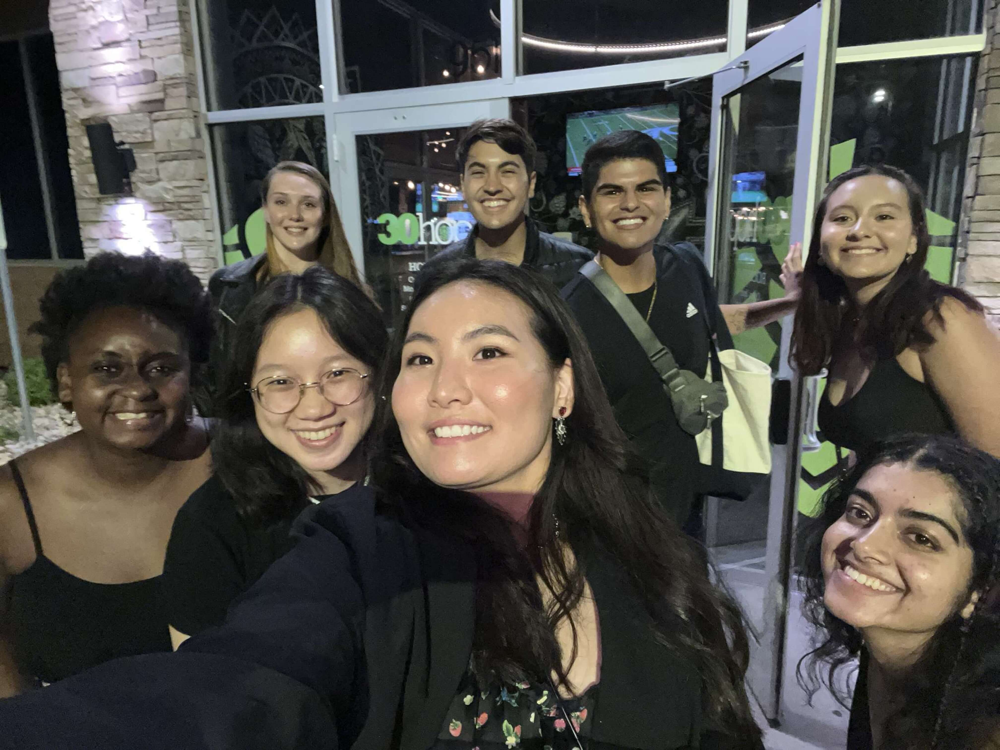

May 2022 — December 2022
Cedar Rapids, Iowa
Collins Aerospace:
Software Engineer Co-op
Software Engineer Co-op
I spent 8 months as a Software Engineer co-op on Collin Aerospace's
Avionics Display team, where I worked on flight deck display systems
for commercial Boeing aircraft. I developed and ran software
verificaion tests on the target hardware, and I analyzed and updated
application code and test procedures to ensure everything was
compliant with the customer's requirements. I also participated in
over 50 peer code reviews to assess that the safety-critical
software met the DO-178B standards.
